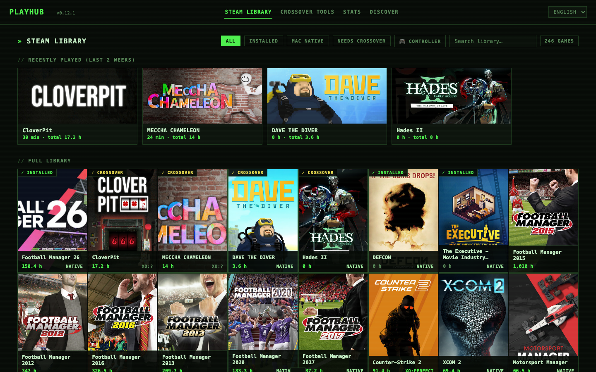
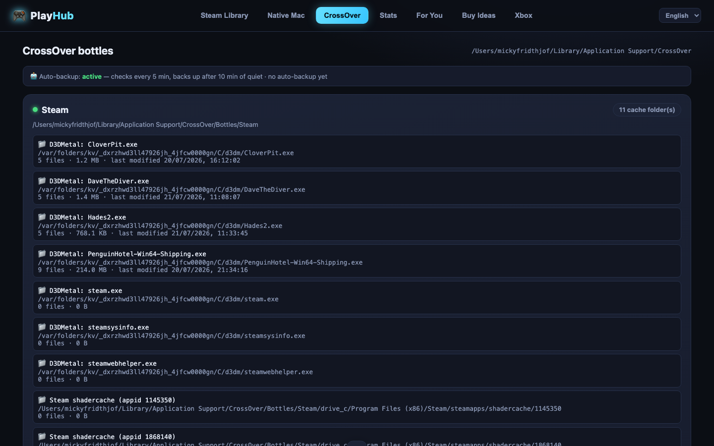
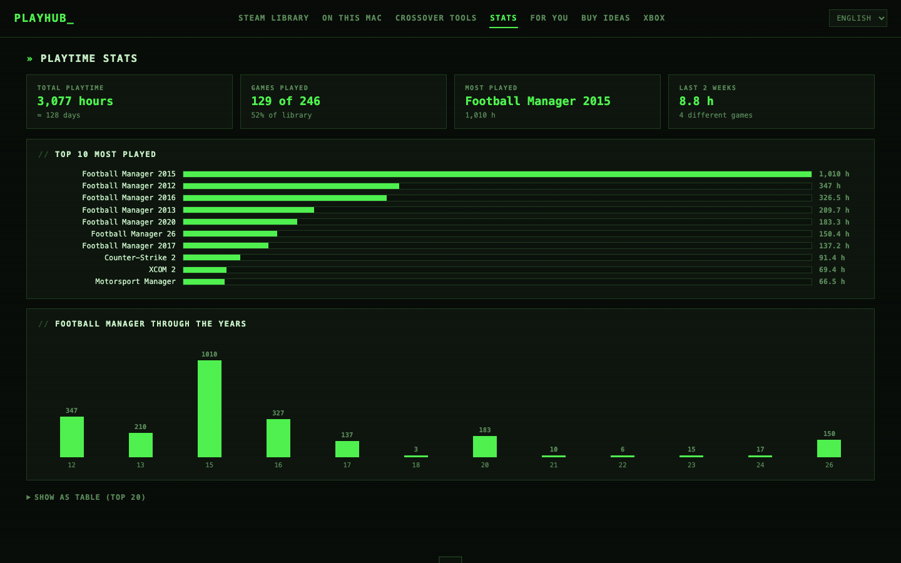

The local game hub for Mac. Your Steam library, CrossOver shader-cache backup, "will it run?" answers, stats and prices — in one dark, fast dashboard.
Free · Open source (MIT) · Runs 100% on your Mac · No accounts, no telemetry

D3DMetal — Apple's DirectX→Metal layer that CrossOver uses — compiles shaders for minutes on first launch — and macOS can wipe that cache anytime. PlayHub finds every cache, maps it to the right game and bottle, auto-backs it up when compilation settles, and restores byte-for-byte. The feature nothing else has.
Every game in your library is badged: native Mac, or a CrossOver compatibility rating (Perfect / Playable / Runs / Broken) from AppleGamingWiki community data.
All your Steam games with covers and playtime. Launch native games via Steam or Windows games straight into the correct CrossOver bottle.
Total playtime, top-10 charts, achievement progress, Steam review levels, Metacritic and HowLongToBeat — per game, one click away.
A recommendation engine profiles your taste from playtime and surfaces the best-reviewed games sitting unplayed in your own library.
Wishlist-worthy games matched to your taste with live prices across Steam, Humble, Fanatical, GMG and GOG (via IsThereAnyDeal).


git clone https://github.com/PlayHubHQDK/playhub.git cd playhub ./install.sh
Requires macOS + Node.js 18+ (brew install node). CrossOver features need CrossOver on Apple Silicon. Uninstall completely anytime with ./uninstall.sh.
| Service | Purpose | When |
|---|---|---|
| api.steampowered.com | Your library, playtime, achievements | Always (your own key) |
| Steam CDN / store API | Covers, review levels, Metacritic, genres | Background enrichment |
| applegamingwiki.com | CrossOver compatibility ratings | Windows-only games |
| steamspy.com | Popularity lists for Buy Ideas | Buy Ideas tab |
| api.isthereanydeal.com | Cross-store prices | Only with your free ITAD key |
| howlongtobeat.com | Completion times | Game detail view |
That's the complete list. Nothing else leaves your machine. Ever.
Don't trust — verify. It's a few thousand lines of readable JavaScript with no build step, MIT-licensed. The key lives in a local .env file and is only ever sent to Valve's own API. Grep the source for fetch( to see every outbound call.
Apple's developer program costs $99/year. If PlayHub gets real traction, a signed and notarized app is the first milestone. Until then, the installer is a readable shell script — and ./uninstall.sh removes every trace.
Those tools run games. PlayHub is the layer on top: one library overview, compatibility answers, stats — and the only tool we know of that backs up D3DMetal shader caches.
The library, stats and recommendation features do. D3DMetal (and shader-cache backup) requires Apple Silicon.
Currently no. The code has clearly-disclosed affiliate slots that may be enabled in the future — links will always be marked, and Steam links are never affiliated (Valve has no affiliate program).